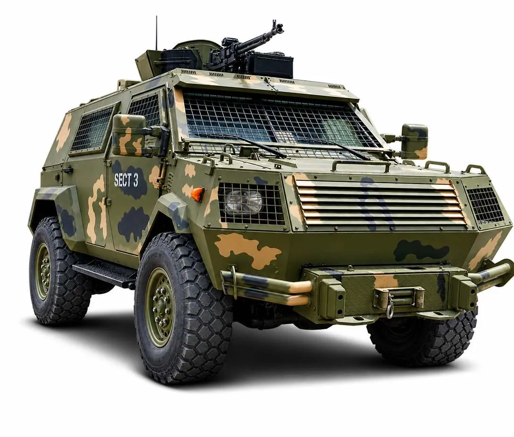
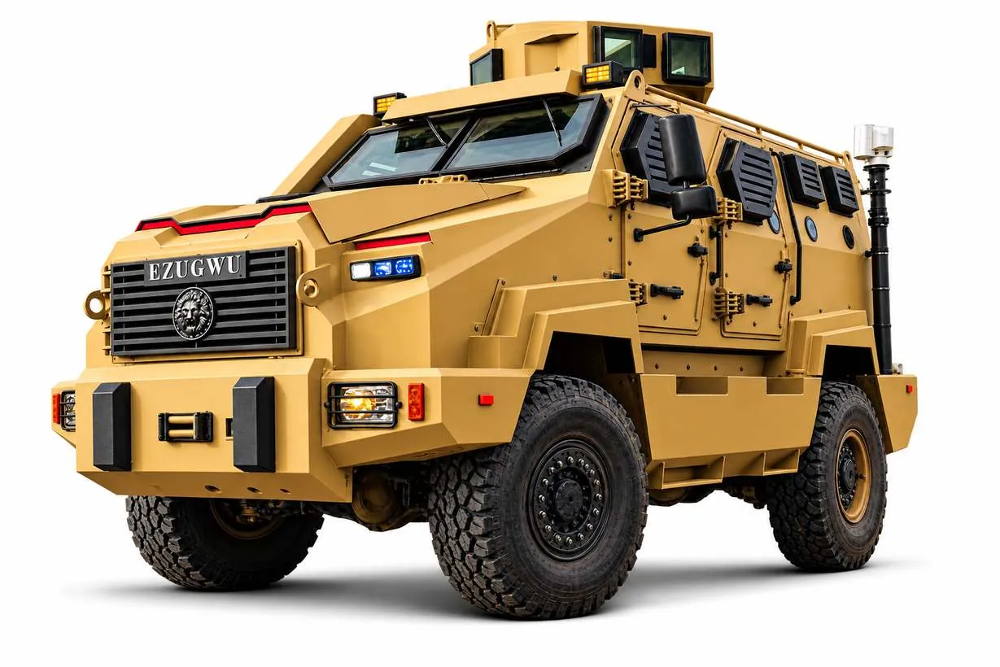
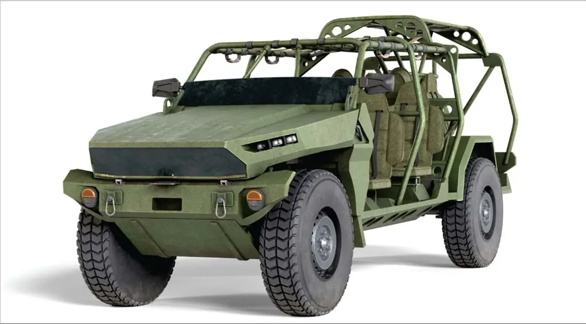
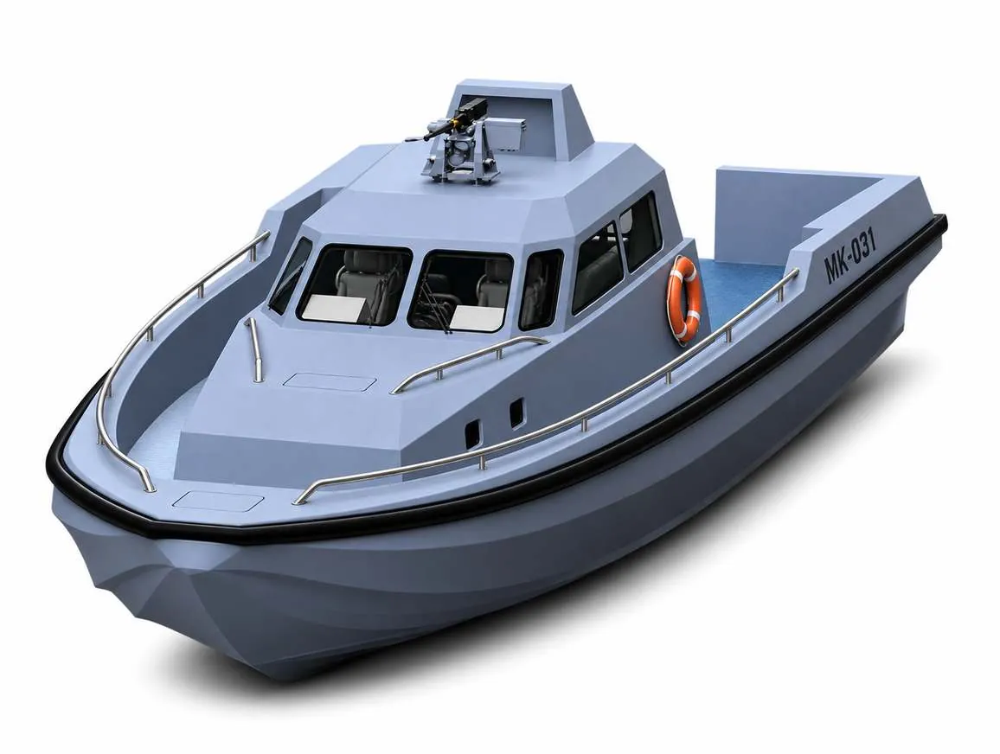
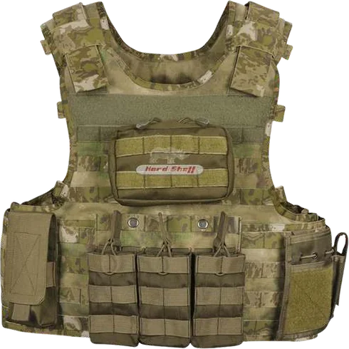
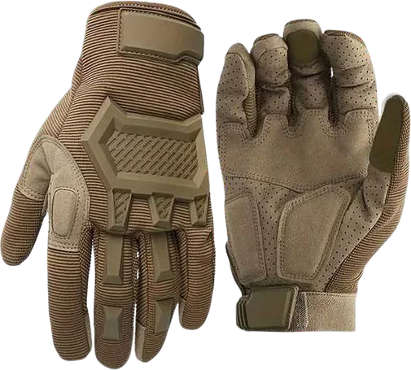
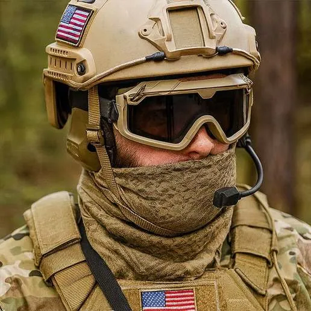
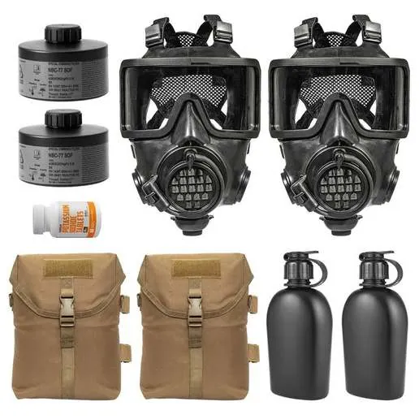
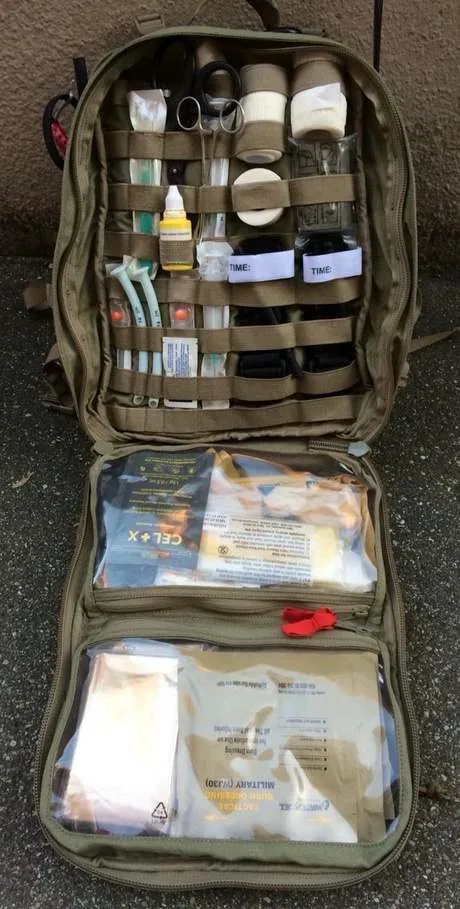
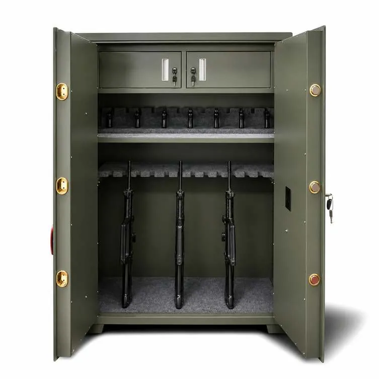

Secure.
Awareness without protection is exposure. Once a threat is identified, the mission depends on the ability to physically and electronically defend personnel, platforms and infrastructure against it.
Tactical Military Vehicles
Military operations require troops to move through hostile and unpredictable environments, facing ambushes, small arms fire, improvised explosive devices and difficult terrain.
Unprotected or non-specialised vehicles expose personnel to unnecessary risk, limit operational reach and reduce mission success. PrimeTEK's range of military vehicles, from standard utility platforms to advanced Armoured Personnel Carriers, provides protected, reliable and mission-adaptable mobility for modern armed forces. It enables safe troop transport, logistical support and combat operations while maintaining speed and battlefield survivability.
Key features- Secure mobility across diverse operational environments
- Range from lightly protected utility vehicles to fully armoured APCs
- Support for troop transport, command and control, medical evacuation and logistics
- Designed for off-road capability and harsh terrain conditions

Ezugwu MRAP
Nigeria's indigenous Mine-Resistant Ambush Protected vehicle, developed by Major General Victor Ezugwu (Rtd) during his tenure as Director General of DICON, in collaboration with the Command Engineering Depot.
It was built to strengthen the Nigerian Armed Forces' operational mobility and survivability on the battlefield. Since its unveiling in 2019, the Ezugwu has been inducted into service with the Nigerian Army, carrying crews of up to 12 personnel and equipped with a 360-degree traversable turret and situational awareness systems for reconnaissance and engagement.
Built on a 4x4 chassis with rugged suspension, the vehicle has undergone iterative upgrades to meet evolving threats, with additional units ordered to expand deployment across theatres where protection against ambush and explosive threats is critical.

Tactical Mission Vehicles
The Tactical Mission Vehicle extends PrimeTEK's protected mobility line for operations that call for a lighter, more configurable platform than the Ezugwu MRAP.
Its open, modular layout suits rapid-reaction, reconnaissance and special operations roles where speed, agility and quick mounting and dismounting matter as much as protection. The platform can be configured around the mission, from personnel carriage to weapons mounts and communications fit.
- Lighter and more agile than a full MRAP
- Configurable for reconnaissance, rapid reaction and patrol
- Off-road suspension and high ground clearance

NN-16M Interceptor
Nigeria's military faces a persistent challenge equipping its forces through imports, hampered by foreign exchange volatility, political diplomacy and government bureaucracy. Building capability at home removes that dependency.
The NN-16M Interceptor is a fast watercraft built in Nigeria for the Nigerian Navy, addressing patrol and security surveillance requirements across the riverine regions. Built for speed and manoeuvrability, it carries a crew of 4 and up to 6 passengers, and can be configured for a number of mission types within the Navy.
The platform can be fitted with a Remote Weapon System supporting 7.62mm and 12.7mm machine guns and 40mm automatic grenade launchers, operated remotely. A high-resolution CCD TV camera, thermal imaging camera and laser rangefinder give operators long-range observation and engagement capability, in daylight and at night.

Personal Protective Equipment
Frontline and field personnel face more than one category of risk in a single deployment: ballistic and fragmentation exposure in combat, chemical and biological hazards, hand and eye injury during weapons handling and fieldwork, sustained noise exposure, and the need for immediate trauma care when an incident occurs.
PrimeTEK's PPE portfolio addresses each of these hazards as part of one system, not a single line item, so personnel are equipped for the full range of conditions a deployment can present.

Ballistic protection
Military-grade ballistic vests and helmets engineered to withstand ballistic impact and fragmentation, reducing the risk of fatal or serious injury without sacrificing the mobility personnel need to advance, hold ground and complete missions under fire.

Hand protection
Tactical gloves built for grip and dexterity alongside protection against cuts, abrasion and impact during weapons handling, vehicle operation and general fieldwork.

Eye & hearing protection
Protective eyewear and hearing protection safeguarding personnel against fragmentation, debris and the sustained noise exposure of live-fire and combat environments.

Respiratory masks & CBRN
Respiratory masks and CBRN protective equipment for operations in contaminated, chemical or biological threat environments, sustaining operational capability where unprotected personnel could not function.

Medical & trauma response
Individual and unit-level medical kits that put haemorrhage control, wound care and trauma supplies within reach the moment an incident occurs, buying critical time until evacuation.
Key features
- Ballistic and fragmentation protection against battlefield threats
- Hand, eye and hearing protection for tactical and field operations
- Respiratory and CBRN protection for contaminated environments
- Individual and unit-level medical kits for immediate trauma response
- Lightweight, ergonomic construction for extended wear and mobility
Weapon Storage and Armouries
Improperly stored firearms and equipment slow response times, increase safety risk and undermine operational readiness in armouries, command posts and field deployments.
Disorganised or outdated storage can lead to weapon damage, accountability failures and delayed access during critical moments. PrimeTEK's modern weapon racks provide secure, organised storage designed to protect firearms and extend service life while enabling rapid access when seconds matter. Built with durable materials, configurable layouts and advanced access control, the racks support both static installations and mobile deployment.
Key features- Secure, high-density storage protecting weapons from damage and unauthorised access
- Electronic and biometric access control, including keypad, RFID and fingerprint authentication
- Audit-ready usage logs tracking who accessed which weapon and when
- Rapid-access configurations to reduce response time during deployment
- Durable, corrosion-resistant construction for extended service life

Counter-UAS
Hostile drones are now a routine threat to bases, convoys and critical infrastructure. PrimeTEK advises on and supplies counter-UAS systems that detect, track and defeat unmanned aerial threats, as part of a layered electronic and physical defence.
Protection creates the space to act
See how robotics, weapons and ammunition sourcing convert operational advantage into mission outcomes.